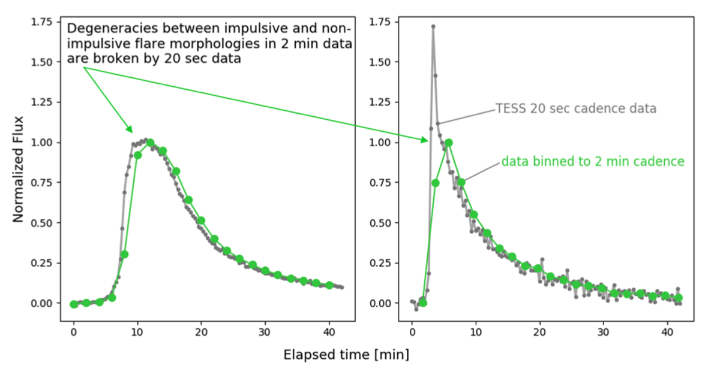
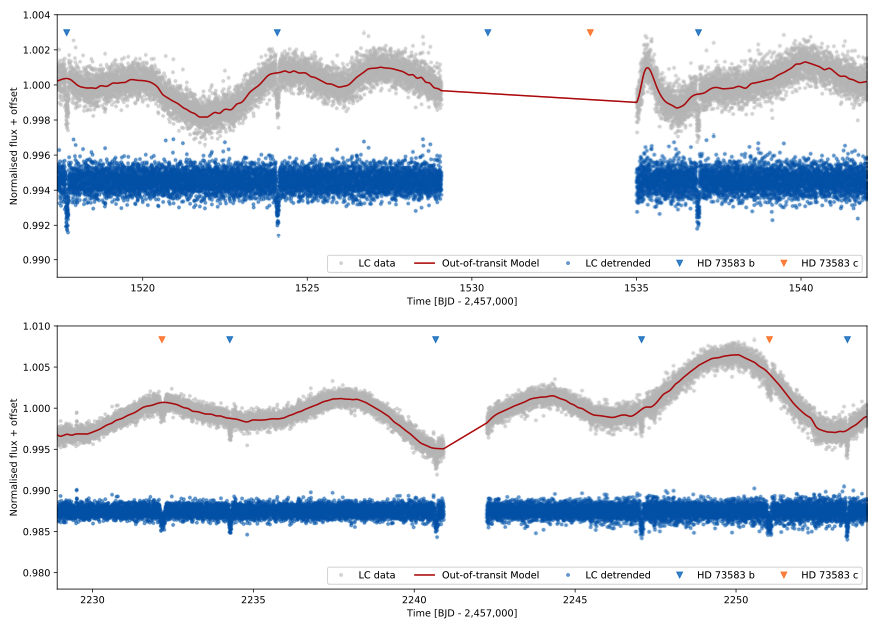

STATUS UPDATE: Orbits 2 of Sector 43, and orbit 1 of Sector 44 are now available to download as a TICA products from MAST
Welcome TESS followers! This week we are looking at three papers from the archive,
TESS Eclipsing Binary Stars. I. Short cadence observations of 4584 eclipsing binaries in Sectors 1-26 (Prsa et. al., 2021) :
In this paper the authors present a catalog of 4584 eclipsing binaries observed by TESS during its first two Cycles. The paper reviews the selection criteria for the objects presented in the catalog, in addition to discussing newly discovered eclipsing systems, and system parameters such as the ephemerides.
The authors of the paper also propose the use of a binary star morphology classification based on a dimensionality reduction algorithm, rather than the more broadly used discrete classes. The sample is also analyzed as a whole, providing completeness estimates and discussion.
The catalog is available on MAST here.
No Such Thing as a Simple Flare: Substructure and QPPs Observed in a Statistical Sample of 20 Second Cadence TESS Flares (Ward et. al., 2021) :
During Cycle 3, TESS was used to observe 266 low-mass flare stars with a 20-second cadence, detecting 3792 stellar flares with an energy of > 1032 erg.
By studying 440 of the brighter flares (97% of which have a release energy > 1033 erg) the authors revealed that there is a degeneracy present in the 2-minute cadence data between sharply-peaked and weakly-peaked flares, this degeneracy however is broken in the 20-second cadence data.
The high-cadenced TESS data allowed for an improved resolution of the the rise phase of the flares and as such it was determined that 46% of large flares exhibit substructure during this phase. In the sample there are 49 candidate quasi-periodic pulsators QPP), with 17 confirmed at a 3+ sigma level. Most of the QLPs have periods of less than 10 minutes, indicating that short period QPPs are common. QPPs are found in both the rise and decay phases of the flares, including a rise-phase QPP in a large flare from Proxima Cen.
Various templates are tested against the flares with that from Davenport et al. (2014) providing a good fit to most classical flares observed at high cadence, 9% however favored a Gaussian peak. The properties of complex flares were also charaterized in the paper, with 17% of complex flares exhibiting "peak-bump" morphologies. These are light curves that are composed of a large, highly impulsive peak followed by a second more gradual Gaussian peak. See this paper for more information about this fascinating flare sample.
The young HD 73583 (TOI-560) planetary system: Two 10-M⊕ mini-Neptunes transiting a 750-Myr-old, bright, and active K dwarf (Barragán et. al., 2021) :
The authors of this paper present the discovery of two transiting planets which were discovered by TESS around the young bright star HD 73583, also known as TOI-560. Through the conduction of detailed follow-up observations, both photometric and spectroscopic, the authors confirm and characterize the system.
The host star, HD 73583, is a 750 Myr old star which has a rotation period of 12.2 days, a mass of 0.71 M⊙, and a radius of 0.66 R⊙.
The first planet, HD 73583 b, has an orbital period of 6.4 days, a mass of 10 M⊕, a radius of 2.81 R⊕, and so a density of 2.43 g cm−3. The atmospheric mass-loss rates of this planet is estimated as 2.4×1010 gs−1.
The second planet, HD 73583 c, has an orbital period of 18.9 days, a mass of 9.6 M⊕, a radius of 2.37 R⊕, and so a density of 3.97 g cm−3. The atmospheric mass-loss rates of this planet is estimated as 5.4×109 gs−1.
The planets are thought to have a solid core with a thick surrounding envelope. Due to the young age of the host star the system is prime candidate for follow up transmission spectroscopy and the search for mass-loss signatures.
![Prsa(images/Prsa.png)
Fig. 1: Taken from Prsa et. al., (2021). Map of TESS EBs observed in sectors 1–26 in the Galactic reference frame. Depicted in green are all vetted and validated EBs observed with the 2-min cadence. Depicted in cyan are the simulated EBs brighter than T = 12 (Wells & Prˇsa 2021). The dearth of systems in the region north of the ecliptic plane is due to the change in boresight in sectors 14-16 and 24-26, where the satellite was pointed at +85o instead of the nominal +54o to mitigate excessive contamination by stray Earthlight and Moonlight in cameras 1 and 2.

Fig. 2: Taken from Ward et. al., (2021). Even the morphologies of very large M-dwarf flares can be degenerate at 2 min cadence. While both flares appear similar when binned to 2 min cadence (green), 20 second cadence observations reveal the left flare actually emits at a near-constant level during peak while the right flare emits according to a classical impulsive profile. Since the high cadence behavior of flares is usually assumed to follow a classical emission profile in photo-chemical models of planetary atmospheres and other contexts (e.g. Howard et al. 2018; Tilley et al. 2019), alternate morphologies may change the rates of chemical reactions as compared to those modeled under classical flares.

Fig. 3: Taken from Barragán et. al., (2021). TESS’s Sector 8 (upper panel) and Sector 34 (lower panel) light curves for HD 73583. TESS data are shown with grey points with the out-of-transit variability model over-plotted in red. The resulting flattened light curves are shown with blue points. Transit positions are marked with blue and orange triangles for HD 73583 b and HD 73583 c, respectively.